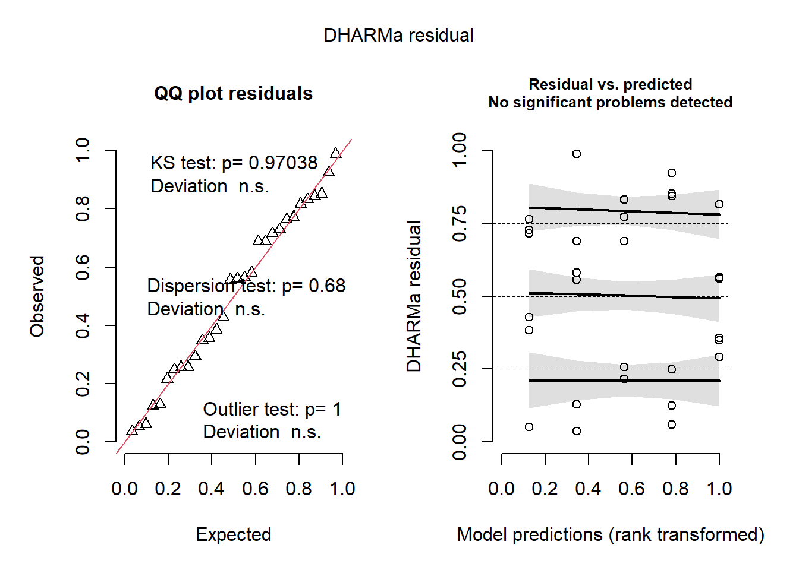
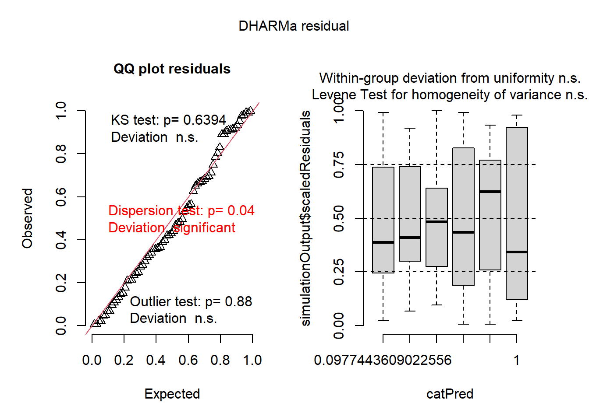

library(gsheet)
mg<- gsheet2tbl("https://docs.google.com/spreadsheets/d/1bq2N19DcZdtax2fQW9OHSGMR0X2__Z9T/edit#gid=983033137")aula 6 y 7
library(tidyverse)
mg |>
ggplot(aes(trat, comp))+
geom_boxplot()
Parametrico
El test T tiene Paired (TRUE) y Non Paired (FALSE) Es cuando tengo variables dependientes o independientes.
Luego tenemos variancias Var.test, si este da menor a 0,05 tenemos Var.Equal = False.
No parametrico
Willcox.test (Paired = True False) Este solo se usa para variables dependientes.
MannWhitney es para variables independientes.
mg2<-mg |>
pivot_wider (names_from = trat,
values_from = comp)
mg2# A tibble: 10 × 3
rep Mg2 control
<dbl> <dbl> <dbl>
1 1 9 13.7
2 2 12.5 15.9
3 3 10 15.7
4 4 8 14.2
5 5 13.2 15.9
6 6 11 16.5
7 7 10.8 18
8 8 9.5 14.4
9 9 10.8 16.4
10 10 10.4 16 teste1<-t.test(mg2$Mg2, mg2$control,
var.equal=TRUE)
teste1
Two Sample t-test
data: mg2$Mg2 and mg2$control
t = -8.1549, df = 18, p-value = 1.863e-07
alternative hypothesis: true difference in means is not equal to 0
95 percent confidence interval:
-6.486839 -3.829161
sample estimates:
mean of x mean of y
10.520 15.678 #Puede ser FALSE tambien, esto se cambia para que las varianzas sean heterogeneas, esto depende del test de varianzas
# hipotesis nula es normalidad en el shapiro.
hist(mg2$control)
hist(mg2$Mg2)
wilcox.test(mg2$Mg2, mg2$control,
paired= FALSE)
Wilcoxon rank sum test with continuity correction
data: mg2$Mg2 and mg2$control
W = 0, p-value = 0.0001817
alternative hypothesis: true location shift is not equal to 0shapiro.test(mg2$control)
Shapiro-Wilk normality test
data: mg2$control
W = 0.93886, p-value = 0.5404var.test(mg2$control, mg2$Mg2)
F test to compare two variances
data: mg2$control and mg2$Mg2
F = 0.67654, num df = 9, denom df = 9, p-value = 0.5698
alternative hypothesis: true ratio of variances is not equal to 1
95 percent confidence interval:
0.1680428 2.7237436
sample estimates:
ratio of variances
0.6765394 #Todo esto se usa para revisar si la Hipotesis nula de la propuesta inicial puede ser rechazada. Este es un test parametrico al haber normalidad.qqnorm(mg2$control)
qqline(mg2$control)
var.test(mg2$control, mg2$Mg2)
F test to compare two variances
data: mg2$control and mg2$Mg2
F = 0.67654, num df = 9, denom df = 9, p-value = 0.5698
alternative hypothesis: true ratio of variances is not equal to 1
95 percent confidence interval:
0.1680428 2.7237436
sample estimates:
ratio of variances
0.6765394 library(report)
report(teste1)Effect sizes were labelled following Cohen's (1988) recommendations.
The Two Sample t-test testing the difference between mg2$Mg2 and mg2$control
(mean of x = 10.52, mean of y = 15.68) suggests that the effect is negative,
statistically significant, and large (difference = -5.16, 95% CI [-6.49,
-3.83], t(18) = -8.15, p < .001; Cohen's d = -3.65, 95% CI [-5.10, -2.16])Dos grupos dependientes.
escala<- gsheet2tbl('https://docs.google.com/spreadsheets/d/1bq2N19DcZdtax2fQW9OHSGMR0X2__Z9T/edit#gid=1729131173')escala |>
ggplot(aes(assessment, acuracia))+
geom_boxplot()escala2<-escala |>
select(assessment, rater, acuracia)|>
pivot_wider(names_from = assessment,
values_from = acuracia)
escala2# A tibble: 10 × 3
rater Unaided Aided1
<chr> <dbl> <dbl>
1 A 0.81 0.91
2 B 0.72 0.91
3 C 0.4 0.91
4 D 0.82 0.96
5 E 0.75 0.96
6 F 0.45 0.9
7 G 0.81 0.85
8 H 0.78 0.88
9 I 0.78 0.95
10 J 0.5 0.94shapiro.test(escala2$Unaided)
Shapiro-Wilk normality test
data: escala2$Unaided
W = 0.7748, p-value = 0.007155shapiro.test(escala2$Aided1)
Shapiro-Wilk normality test
data: escala2$Aided1
W = 0.92852, p-value = 0.4335#Rechaza las normalidades
A<-var.test(escala2$Unaided, escala2$Aided1,
paired= TRUE,
var.equal = FALSE)
A
F test to compare two variances
data: escala2$Unaided and escala2$Aided1
F = 20.978, num df = 9, denom df = 9, p-value = 0.000106
alternative hypothesis: true ratio of variances is not equal to 1
95 percent confidence interval:
5.210754 84.459185
sample estimates:
ratio of variances
20.97847 ##Test no paramétrico
wilcox.test(escala2$Aided1,
escala2$Unaided,
paired = TRUE)
Wilcoxon signed rank test with continuity correction
data: escala2$Aided1 and escala2$Unaided
V = 55, p-value = 0.005889
alternative hypothesis: true location shift is not equal to 0#Al ser menor de 0,05 se rechaza la hipotesis nula.##Analisis exploratorio: 3 o mas grupos
micelial<-gsheet2tbl('https://docs.google.com/spreadsheets/d/1bq2N19DcZdtax2fQW9OHSGMR0X2__Z9T/edit#gid=959387827')micelial |>
ggplot(aes(especie,tcm))+
geom_jitter(width = 0.05)#Que vamos a testear? Ver si una de las variables es diferente entre ellas.ml <-lm(tcm ~ especie, data = micelial) #En especie se puede colocar -1 para ver el summary mejor
anova (ml)Analysis of Variance Table
Response: tcm
Df Sum Sq Mean Sq F value Pr(>F)
especie 4 1.46958 0.36739 19.629 2.028e-07 ***
Residuals 25 0.46792 0.01872
---
Signif. codes: 0 '***' 0.001 '**' 0.01 '*' 0.05 '.' 0.1 ' ' 1summary(ml)
Call:
lm(formula = tcm ~ especie, data = micelial)
Residuals:
Min 1Q Median 3Q Max
-0.23667 -0.09667 0.01583 0.08833 0.28333
Coefficients:
Estimate Std. Error t value Pr(>|t|)
(Intercept) 1.57167 0.05585 28.140 < 2e-16 ***
especieFaus -0.33500 0.07899 -4.241 0.000266 ***
especieFcor -0.25000 0.07899 -3.165 0.004047 **
especieFgra -0.66000 0.07899 -8.356 1.05e-08 ***
especieFmer -0.14500 0.07899 -1.836 0.078317 .
---
Signif. codes: 0 '***' 0.001 '**' 0.01 '*' 0.05 '.' 0.1 ' ' 1
Residual standard error: 0.1368 on 25 degrees of freedom
Multiple R-squared: 0.7585, Adjusted R-squared: 0.7199
F-statistic: 19.63 on 4 and 25 DF, p-value: 2.028e-07library (emmeans)
medias1<-emmeans(ml,~ especie)
library(multcomp)
library(multcompView)
cld(medias1) especie emmean SE df lower.CL upper.CL .group
Fgra 0.912 0.0559 25 0.797 1.03 1
Faus 1.237 0.0559 25 1.122 1.35 2
Fcor 1.322 0.0559 25 1.207 1.44 2
Fmer 1.427 0.0559 25 1.312 1.54 23
Fasi 1.572 0.0559 25 1.457 1.69 3
Confidence level used: 0.95
P value adjustment: tukey method for comparing a family of 5 estimates
significance level used: alpha = 0.05
NOTE: If two or more means share the same grouping symbol,
then we cannot show them to be different.
But we also did not show them to be the same. #Para revisar los modelos tan complejos, da una simulacion de los residuos.
library(performance)
check_normality(ml)OK: residuals appear as normally distributed (p = 0.878).check_heteroscedasticity(ml)OK: Error variance appears to be homoscedastic (p = 0.880).check_model(ml)library(DHARMa)
plot(simulateResiduals(ml))
#Aula 7
library(ggthemes)
theme_basefunction (base_size = 16, base_family = "")
{
theme_foundation() + theme(line = element_line(colour = "black",
lineend = "round", linetype = "solid"), rect = element_rect(fill = "white",
colour = "black", linetype = "solid"), text = element_text(colour = "black",
face = "plain", family = base_family, size = base_size,
vjust = 0.5, hjust = 0.5, lineheight = 1), panel.grid = element_blank(),
strip.background = element_rect(colour = NA), legend.key = element_rect(colour = NA),
title = element_text(size = rel(1)), plot.title = element_text(size = rel(1.2),
face = "bold"), strip.text = element_text(), axis.ticks.length = unit(0.5,
"lines"))
}
<bytecode: 0x00000213d2c087a0>
<environment: namespace:ggthemes>insecticida<- InsectSprays
insecticida |>
count(spray) spray n
1 A 12
2 B 12
3 C 12
4 D 12
5 E 12
6 F 12#n significa cuantas veces se probo cada insecticida.
#Se ve 1 factor solo con 6 niveles.
insecticida |>
ggplot(aes(spray,count))+
geom_boxplot()
#Se genero un boxplot para ver que sucede dentro de los datos de una manera mas facil #Primero se deben trabajar con los residuos de anova, para ajustar la anova para poder realizar todos los test que necesitamos.
m1<- lm(count ~ spray,
data = insecticida)
summary(m1)
Call:
lm(formula = count ~ spray, data = insecticida)
Residuals:
Min 1Q Median 3Q Max
-8.333 -1.958 -0.500 1.667 9.333
Coefficients:
Estimate Std. Error t value Pr(>|t|)
(Intercept) 14.5000 1.1322 12.807 < 2e-16 ***
sprayB 0.8333 1.6011 0.520 0.604
sprayC -12.4167 1.6011 -7.755 7.27e-11 ***
sprayD -9.5833 1.6011 -5.985 9.82e-08 ***
sprayE -11.0000 1.6011 -6.870 2.75e-09 ***
sprayF 2.1667 1.6011 1.353 0.181
---
Signif. codes: 0 '***' 0.001 '**' 0.01 '*' 0.05 '.' 0.1 ' ' 1
Residual standard error: 3.922 on 66 degrees of freedom
Multiple R-squared: 0.7244, Adjusted R-squared: 0.7036
F-statistic: 34.7 on 5 and 66 DF, p-value: < 2.2e-16anova(m1)Analysis of Variance Table
Response: count
Df Sum Sq Mean Sq F value Pr(>F)
spray 5 2668.8 533.77 34.702 < 2.2e-16 ***
Residuals 66 1015.2 15.38
---
Signif. codes: 0 '***' 0.001 '**' 0.01 '*' 0.05 '.' 0.1 ' ' 1ml$residuals 1 2 3 4 5 6
-0.07166667 0.01833333 -0.05166667 -0.05166667 0.02833333 0.12833333
7 8 9 10 11 12
0.28333333 0.01333333 0.03333333 0.06333333 -0.15666667 -0.23666667
13 14 15 16 17 18
-0.10166667 -0.08166667 -0.12166667 0.06833333 0.10833333 0.12833333
19 20 21 22 23 24
-0.03166667 0.06833333 -0.20166667 0.08833333 -0.01166667 0.08833333
25 26 27 28 29 30
0.12333333 0.19333333 0.14333333 -0.11666667 -0.14666667 -0.19666667 hist(ml$residuals)qqnorm(ml$residuals)
qqline(ml$residuals)shapiro.test(ml$residuals)
Shapiro-Wilk normality test
data: ml$residuals
W = 0.9821, p-value = 0.8782bartlett.test(count ~ spray,
data = insecticida)
Bartlett test of homogeneity of variances
data: count by spray
Bartlett's K-squared = 25.96, df = 5, p-value = 9.085e-05#Es mas importante que las varianzas no sean heterogeneas que la ausencia de normalidad.
#En el caso de esta base de datos, la varianza es heterogenea y tampoco tiene normalidad. podemos ver esto directamente en el siguiente codigo
library (emmeans)
m1_medias<-emmeans(m1, ~ spray)
m1_medias spray emmean SE df lower.CL upper.CL
A 14.50 1.13 66 12.240 16.76
B 15.33 1.13 66 13.073 17.59
C 2.08 1.13 66 -0.177 4.34
D 4.92 1.13 66 2.656 7.18
E 3.50 1.13 66 1.240 5.76
F 16.67 1.13 66 14.406 18.93
Confidence level used: 0.95 plot(m1_medias)
library(multcomp)
library(multcompView)
cld(m1_medias) spray emmean SE df lower.CL upper.CL .group
C 2.08 1.13 66 -0.177 4.34 1
E 3.50 1.13 66 1.240 5.76 1
D 4.92 1.13 66 2.656 7.18 1
A 14.50 1.13 66 12.240 16.76 2
B 15.33 1.13 66 13.073 17.59 2
F 16.67 1.13 66 14.406 18.93 2
Confidence level used: 0.95
P value adjustment: tukey method for comparing a family of 6 estimates
significance level used: alpha = 0.05
NOTE: If two or more means share the same grouping symbol,
then we cannot show them to be different.
But we also did not show them to be the same. library(performance)
check_normality(m1)Warning: Non-normality of residuals detected (p = 0.022).check_heteroscedasticity(m1)Warning: Heteroscedasticity (non-constant error variance) detected (p < .001).library(DHARMa)
plot(simulateResiduals(m1))
#Se puede notar que no hay problema con la normalidad pero si con la varianzaAlternativa 1 - Transformacion.
m2<- lm(count ~ spray,
data = insecticida)
insecticida2 <- insecticida |>
mutate(count2= sqrt(count))
insecticida2 |>
ggplot(aes(spray,count2))+
geom_boxplot()
m2<- lm(count2 ~ spray,
data = insecticida2)
summary(m2)
Call:
lm(formula = count2 ~ spray, data = insecticida2)
Residuals:
Min 1Q Median 3Q Max
-1.24486 -0.39970 -0.01902 0.42661 1.40089
Coefficients:
Estimate Std. Error t value Pr(>|t|)
(Intercept) 3.7607 0.1814 20.733 < 2e-16 ***
sprayB 0.1160 0.2565 0.452 0.653
sprayC -2.5158 0.2565 -9.807 1.64e-14 ***
sprayD -1.5963 0.2565 -6.223 3.80e-08 ***
sprayE -1.9512 0.2565 -7.606 1.34e-10 ***
sprayF 0.2579 0.2565 1.006 0.318
---
Signif. codes: 0 '***' 0.001 '**' 0.01 '*' 0.05 '.' 0.1 ' ' 1
Residual standard error: 0.6283 on 66 degrees of freedom
Multiple R-squared: 0.7724, Adjusted R-squared: 0.7552
F-statistic: 44.8 on 5 and 66 DF, p-value: < 2.2e-16anova(m2)Analysis of Variance Table
Response: count2
Df Sum Sq Mean Sq F value Pr(>F)
spray 5 88.438 17.6876 44.799 < 2.2e-16 ***
Residuals 66 26.058 0.3948
---
Signif. codes: 0 '***' 0.001 '**' 0.01 '*' 0.05 '.' 0.1 ' ' 1m2$residuals 1 2 3 4 5 6
-0.59840073 -1.11492708 0.71145756 -0.01902101 -0.01902101 -0.29657678
7 8 9 10 11 12
-0.59840073 1.03515313 0.36242723 0.71145756 -0.01902101 -0.15512712
13 14 15 16 17 18
-0.56000661 0.24647423 0.70594430 -0.56000661 0.12336860 -0.13497401
19 20 21 22 23 24
0.24647423 0.24647423 0.48226755 0.70594430 -1.23088009 -0.27108012
25 26 27 28 29 30
-1.24485667 -0.24485667 1.40089464 0.16935689 0.48719414 -0.24485667
31 32 33 34 35 36
0.16935689 -0.24485667 0.48719414 -1.24485667 -0.24485667 0.75514333
37 38 39 40 41 42
-0.43230306 0.07171411 1.29974775 0.28513587 -0.16435387 -0.43230306
43 44 45 46 47 48
0.07171411 0.07171411 0.07171411 0.07171411 -0.75014031 -0.16435387
49 50 51 52 53 54
-0.07741021 0.42660696 -0.07741021 0.42660696 -0.07741021 0.64002872
55 56 57 58 59 60
-0.80946102 -0.80946102 -0.07741021 -0.39524746 0.64002872 0.19053898
61 62 63 64 65 66
-0.70199237 -1.01861716 -0.14563382 0.67179860 -0.14563382 -0.01861716
67 68 69 70 71 72
-0.41306589 -0.85633950 1.08040235 1.08040235 0.88036232 -0.41306589 hist(m2$residuals)
qqnorm(m2$residuals)
qqline(m2$residuals)
shapiro.test(m2$residuals)
Shapiro-Wilk normality test
data: m2$residuals
W = 0.98721, p-value = 0.6814bartlett.test(count2 ~ spray,
data = insecticida2)
Bartlett test of homogeneity of variances
data: count2 by spray
Bartlett's K-squared = 3.7525, df = 5, p-value = 0.5856library (emmeans)
m2_medias<-emmeans(m2, ~ spray)
m2_medias spray emmean SE df lower.CL upper.CL
A 3.76 0.181 66 3.399 4.12
B 3.88 0.181 66 3.514 4.24
C 1.24 0.181 66 0.883 1.61
D 2.16 0.181 66 1.802 2.53
E 1.81 0.181 66 1.447 2.17
F 4.02 0.181 66 3.656 4.38
Confidence level used: 0.95 plot(m2_medias)
library(multcomp)
library(multcompView)
cld(m2_medias) spray emmean SE df lower.CL upper.CL .group
C 1.24 0.181 66 0.883 1.61 1
E 1.81 0.181 66 1.447 2.17 12
D 2.16 0.181 66 1.802 2.53 2
A 3.76 0.181 66 3.399 4.12 3
B 3.88 0.181 66 3.514 4.24 3
F 4.02 0.181 66 3.656 4.38 3
Confidence level used: 0.95
P value adjustment: tukey method for comparing a family of 6 estimates
significance level used: alpha = 0.05
NOTE: If two or more means share the same grouping symbol,
then we cannot show them to be different.
But we also did not show them to be the same. library(performance)
check_normality(m2)OK: residuals appear as normally distributed (p = 0.681).check_heteroscedasticity(m2)OK: Error variance appears to be homoscedastic (p = 0.854).library(DHARMa)
plot(simulateResiduals(m2))
#El test de anova demuestra que por lo menos uno de los grupos demuestra diferencia de los otros.
pwpm(m2_medias) A B C D E F
A [3.76] 0.9975 <.0001 <.0001 <.0001 0.9145
B -0.116 [3.88] <.0001 <.0001 <.0001 0.9936
C 2.516 2.632 [1.24] 0.0081 0.2513 <.0001
D 1.596 1.712 -0.919 [2.16] 0.7366 <.0001
E 1.951 2.067 -0.565 0.355 [1.81] <.0001
F -0.258 -0.142 -2.774 -1.854 -2.209 [4.02]
Row and column labels: spray
Upper triangle: P values adjust = "tukey"
Diagonal: [Estimates] (emmean)
Lower triangle: Comparisons (estimate) earlier vs. laterpwpp(m2_medias)
pairs(m2_medias) contrast estimate SE df t.ratio p.value
A - B -0.116 0.257 66 -0.452 0.9975
A - C 2.516 0.257 66 9.807 <.0001
A - D 1.596 0.257 66 6.223 <.0001
A - E 1.951 0.257 66 7.606 <.0001
A - F -0.258 0.257 66 -1.006 0.9145
B - C 2.632 0.257 66 10.259 <.0001
B - D 1.712 0.257 66 6.675 <.0001
B - E 2.067 0.257 66 8.058 <.0001
B - F -0.142 0.257 66 -0.554 0.9936
C - D -0.919 0.257 66 -3.584 0.0081
C - E -0.565 0.257 66 -2.201 0.2513
C - F -2.774 0.257 66 -10.813 <.0001
D - E 0.355 0.257 66 1.383 0.7366
D - F -1.854 0.257 66 -7.229 <.0001
E - F -2.209 0.257 66 -8.612 <.0001
P value adjustment: tukey method for comparing a family of 6 estimates #Transformación de box-cox y(lambda)= (x^lambda-1)/lambda
library (MASS)
b<-boxcox(lm(insecticida$count+0.1~1))
#calcular lambda
lambda <- b$x[which.max(b$y)]
lambda[1] 0.4242424#hacer la formula
insecticida$count3 <- (insecticida$count ^ lambda -1) /lambda
insecticida$count3 [1] 3.903635 3.024469 6.043993 4.864268 4.864268 4.407118 3.903635
[8] 6.557185 5.484274 6.043993 4.864268 4.640760 4.161975 5.484274
[15] 6.219699 4.161975 5.285168 4.864268 5.484274 5.484274 5.863153
[22] 6.219699 3.024469 4.640760 -2.357143 0.000000 3.024469 0.805831
[29] 1.399509 0.000000 0.805831 0.000000 1.399509 -2.357143 0.000000
[36] 1.887150 1.399509 2.308577 4.407118 2.683787 1.887150 1.399509
[43] 2.308577 2.308577 2.308577 2.308577 0.805831 1.887150 1.399509
[50] 2.308577 1.399509 2.308577 1.399509 2.683787 0.000000 0.000000
[57] 1.399509 0.805831 2.683787 1.887150 4.161975 3.629951 5.078760
[64] 6.390651 5.078760 5.285168 4.640760 3.903635 7.033117 7.033117
[71] 6.719601 4.640760#Es el dato que se va a utilizar para la transformacion
#Si lambda es 0.5 es igual que hacer la raiz cuadrada.Alternativa 2 - no parametrico
library(agricolae)
kruskal.test(count ~ spray,
data = insecticida)
Kruskal-Wallis rank sum test
data: count by spray
Kruskal-Wallis chi-squared = 54.691, df = 5, p-value = 1.511e-10#las medias no son iguales, pues se rechaza la hipotesis nula
KAgric<-kruskal(insecticida$count,
insecticida$spray,
group = TRUE)
#El group es para colocar los grupos con el test de Fischer.
KAgric$statistics
Chisq Df p.chisq t.value MSD
54.69134 5 1.510845e-10 1.996564 8.462804
$parameters
test p.ajusted name.t ntr alpha
Kruskal-Wallis none insecticida$spray 6 0.05
$means
insecticida.count rank std r Min Max Q25 Q50 Q75
A 14.500000 52.16667 4.719399 12 7 23 11.50 14.0 17.75
B 15.333333 54.83333 4.271115 12 7 21 12.50 16.5 17.50
C 2.083333 11.45833 1.975225 12 0 7 1.00 1.5 3.00
D 4.916667 25.58333 2.503028 12 2 12 3.75 5.0 5.00
E 3.500000 19.33333 1.732051 12 1 6 2.75 3.0 5.00
F 16.666667 55.62500 6.213378 12 9 26 12.50 15.0 22.50
$comparison
NULL
$groups
insecticida$count groups
F 55.62500 a
B 54.83333 a
A 52.16667 a
D 25.58333 b
E 19.33333 bc
C 11.45833 c
attr(,"class")
[1] "group"#El metodo no parametrico dio la misma respuesta que el metodo transformado para el metodo parametrico.Alternativa 3 GLMs
m4 <- glm(count~spray,
family= poisson,
data = insecticida)
#La distribucion se ajusta bien a poisson por la numerica discreta, al testar esto, se da una desviacion Dice que el valor de Anova es significativo, diciendo que uno dio diferente a los otros.
#Al hacerse todo l
summary(m4)
Call:
glm(formula = count ~ spray, family = poisson, data = insecticida)
Coefficients:
Estimate Std. Error z value Pr(>|z|)
(Intercept) 2.67415 0.07581 35.274 < 2e-16 ***
sprayB 0.05588 0.10574 0.528 0.597
sprayC -1.94018 0.21389 -9.071 < 2e-16 ***
sprayD -1.08152 0.15065 -7.179 7.03e-13 ***
sprayE -1.42139 0.17192 -8.268 < 2e-16 ***
sprayF 0.13926 0.10367 1.343 0.179
---
Signif. codes: 0 '***' 0.001 '**' 0.01 '*' 0.05 '.' 0.1 ' ' 1
(Dispersion parameter for poisson family taken to be 1)
Null deviance: 409.041 on 71 degrees of freedom
Residual deviance: 98.329 on 66 degrees of freedom
AIC: 376.59
Number of Fisher Scoring iterations: 5library(car)
Anova(m4)Analysis of Deviance Table (Type II tests)
Response: count
LR Chisq Df Pr(>Chisq)
spray 310.71 5 < 2.2e-16 ***
---
Signif. codes: 0 '***' 0.001 '**' 0.01 '*' 0.05 '.' 0.1 ' ' 1plot(simulateResiduals(m4))
m4_medias<- emmeans(m4,~spray,
type = 'response')
m4_medias spray rate SE df asymp.LCL asymp.UCL
A 14.50 1.099 Inf 12.50 16.82
B 15.33 1.130 Inf 13.27 17.72
C 2.08 0.417 Inf 1.41 3.08
D 4.92 0.640 Inf 3.81 6.35
E 3.50 0.540 Inf 2.59 4.74
F 16.67 1.179 Inf 14.51 19.14
Confidence level used: 0.95
Intervals are back-transformed from the log scale #Asymp habla de que todas las respuestas estan en este rango
cld(m4_medias) spray rate SE df asymp.LCL asymp.UCL .group
C 2.08 0.417 Inf 1.41 3.08 1
E 3.50 0.540 Inf 2.59 4.74 12
D 4.92 0.640 Inf 3.81 6.35 2
A 14.50 1.099 Inf 12.50 16.82 3
B 15.33 1.130 Inf 13.27 17.72 3
F 16.67 1.179 Inf 14.51 19.14 3
Confidence level used: 0.95
Intervals are back-transformed from the log scale
P value adjustment: tukey method for comparing a family of 6 estimates
Tests are performed on the log scale
significance level used: alpha = 0.05
NOTE: If two or more means share the same grouping symbol,
then we cannot show them to be different.
But we also did not show them to be the same. Anova Factorial
library(gsheet)
li <- gsheet2tbl('https://docs.google.com/spreadsheets/d/1bq2N19DcZdtax2fQW9OHSGMR0X2__Z9T/edit#gid=2023059672')
#Severidad en funcion a tratamientos
li |>
ggplot(aes(factor(dose), severity, color = factor (dose)))+
geom_jitter(width=0.1)+
facet_wrap(~treat)##Modelo factorial (twoway anova)
mf <- lm(severity ~ treat*factor(dose),
data= li)
mf
Call:
lm(formula = severity ~ treat * factor(dose), data = li)
Coefficients:
(Intercept) treatTebuconazole
0.2921 -0.2711
factor(dose)2 treatTebuconazole:factor(dose)2
-0.2420 0.2412 anova(mf)Analysis of Variance Table
Response: severity
Df Sum Sq Mean Sq F value Pr(>F)
treat 1 0.113232 0.113232 30.358 4.754e-05 ***
factor(dose) 1 0.073683 0.073683 19.755 0.0004077 ***
treat:factor(dose) 1 0.072739 0.072739 19.502 0.0004326 ***
Residuals 16 0.059678 0.003730
---
Signif. codes: 0 '***' 0.001 '**' 0.01 '*' 0.05 '.' 0.1 ' ' 1#podemos ver que la interaccion entre dosis y tratamiento no es significativa.
#Las letras mayusculas comparan Los pesticidas y la minuscula compara los dosajes.
#Antes de todo esto, debemos testar las premisas.
plot(simulateResiduals(mf))
check_normality(mf)Warning: Non-normality of residuals detected (p = 0.011).check_heteroscedasticity(mf)Warning: Heteroscedasticity (non-constant error variance) detected (p < .001).#Viendo los dosajes de los tratamientos
mf_medias <- emmeans(mf, ~ dose | treat)
cld(mf_medias)treat = Ionic liquid:
dose emmean SE df lower.CL upper.CL .group
2.0 0.0501 0.0273 16 -0.00781 0.1080 1
0.5 0.2921 0.0273 16 0.23420 0.3500 2
treat = Tebuconazole:
dose emmean SE df lower.CL upper.CL .group
2.0 0.0202 0.0273 16 -0.03768 0.0781 1
0.5 0.0210 0.0273 16 -0.03690 0.0789 1
Confidence level used: 0.95
significance level used: alpha = 0.05
NOTE: If two or more means share the same grouping symbol,
then we cannot show them to be different.
But we also did not show them to be the same. #Viendo los pesticidas segun el tratamiento
mf_medias2 <- emmeans(mf, ~ treat | dose)
cld(mf_medias2)dose = 0.5:
treat emmean SE df lower.CL upper.CL .group
Tebuconazole 0.0210 0.0273 16 -0.03690 0.0789 1
Ionic liquid 0.2921 0.0273 16 0.23420 0.3500 2
dose = 2.0:
treat emmean SE df lower.CL upper.CL .group
Tebuconazole 0.0202 0.0273 16 -0.03768 0.0781 1
Ionic liquid 0.0501 0.0273 16 -0.00781 0.1080 1
Confidence level used: 0.95
significance level used: alpha = 0.05
NOTE: If two or more means share the same grouping symbol,
then we cannot show them to be different.
But we also did not show them to be the same.